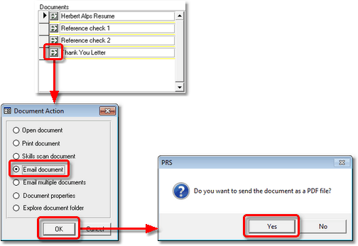
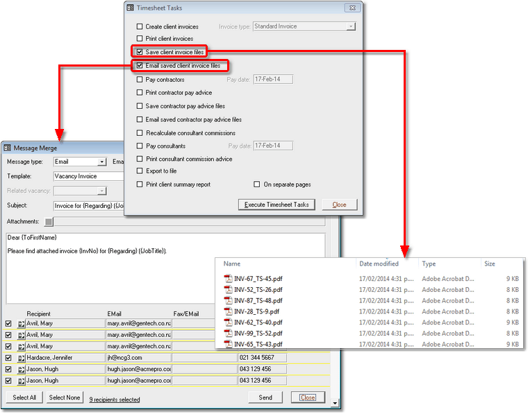

|
|
PRS News & Tips | February 2014 |
We’ve just released PRS 8.1.3. To download and install this recommended upgrade go to the Installing the Latest PRS Client section on our Updates web page and follow the instructions.
What’s New in PRS 8.1.3
For a full list of the changes since the previous release see the PRS Changelog web page.
Email Invoice command
 in version 8.1.3
in version 8.1.3
We’ve added an Email command to the Invoices form so you can email a copy of the invoice in PDF format directly with just a couple of mouse clicks (if your version of Microsoft is older than Word 2007 the invoice will be sent in Word format, not PDF).
|
Note
|
This command uses the Invoice and Vacancy Invoice Message Templates — to install the default Invoice and Vacancy Invoice templates run the Tools→Setup→Message Templates menu command and then press the Install Defaults… button. |
Email linked document as PDF
in version 8.1.3
The Email Linked Document option now has the option to email Word documents in PDF format (PDF format option requires Word 2007 or newer).

Datasheet View for Personnel Summary form
in version 8.1.3
The Personnel Summary form can now be switched to Datasheet View (use the Window→Toggle Form View menu command or Ctrl+Shift+F).
Emailing Contractor Invoices
in version 8.1.3
It’s now quick and easy to email PDF formatted contract vacancy invoices to your clients. Two new timesheet task options have been added to the Timesheet Tasks command:
-
Save client invoice files which saves the timesheet invoice files in PDF format in the TimeSheets subfolder in the Exports folder (if your version of Microsoft Word is older than Word 2007 then the invoice will be saved in Word format).
-
Email saved client invoice files which emails the saved timesheet invoice files to the client using the Vacancy Invoice message template.

Tips and Tricks
Upgrading Windows 8 to Windows 8.1?
The Windows 8 to Windows 8.1 upgrade corrupts installed PRS Clients so you will need to reinstall the PRS Runtime and the PRS Client after you have completed the Windows 8.1 upgrade. Here’s how:
-
Install the PRS Runtime from the Web
-
Reinstall the latest PRS Client.
Quickly tag Personnel from Datasheet View
Manually ticking and unticking Personnel tags is much easier in Datasheet View. Use the Window→Toggle Form View menu command (keyboard shortcut Ctrl+Shift+F) to switch the Personnel form to and from Datasheet View.
Skype directly from the PRS
If you have Skype installed on your PC then you can Skype candidates and clients directly from the PRS — just save the person’s Skype name in a phone number field on the Personnel form then click the green Goto button next to the Skype name to place a call.
|
Note
|
To enable Skype phone calls from the PRS:
|
Need help?
Our Support web page explains how to get answers to PRS questions and includes links to articles on Maintaining Database Reliability and Performance and PRS Best Practice Deployment.
|
Important
|
If you no longer wish to receive this newsletter please email support@prshq.com with the word UNSUBSCRIBE in the subject line. |